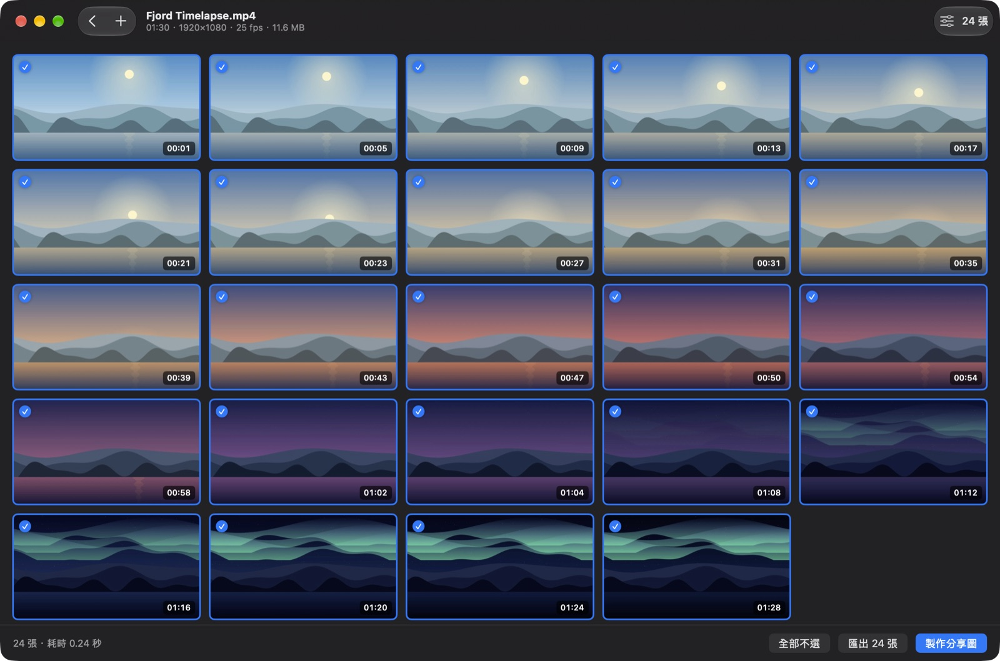

Kvikkshot
想要的每一格，一眨眼就好。
影片一拖進來，截圖就已經好了。留下想要的，匯出，或者拼成一張圖來分享。Kvikk 在挪威語裡是「快」。
平台macOS 14，Apple 晶片和 Intel
價格免費
網路完全不連網
語言EN, 简体, 繁體

它能做什麼
- 按間隔或按數量每隔幾秒一張，或在整段影片中平均擷取指定數量。
- 快速或精確關鍵影格模式幾秒鐘就能掃完一小時的 4K 影片；精確模式準確到每一格。
- 一次多部影片批次拖入，匯出時每部影片各有自己的檔案夾。
- 分享圖把截圖拼成一張圖，可選欄數、淺色或深色，附上時間和影片資訊。
- 用完不留痕跡返回首頁、結束時和下次啟動時，都會刪除快取的截圖。
取得 Kvikkshot
已由 Apple 簽署並完成公證。打開磁碟映像檔，把 Kvikkshot 拖到「應用程式」檔案夾即可。Mac App Store 版也即將推出。